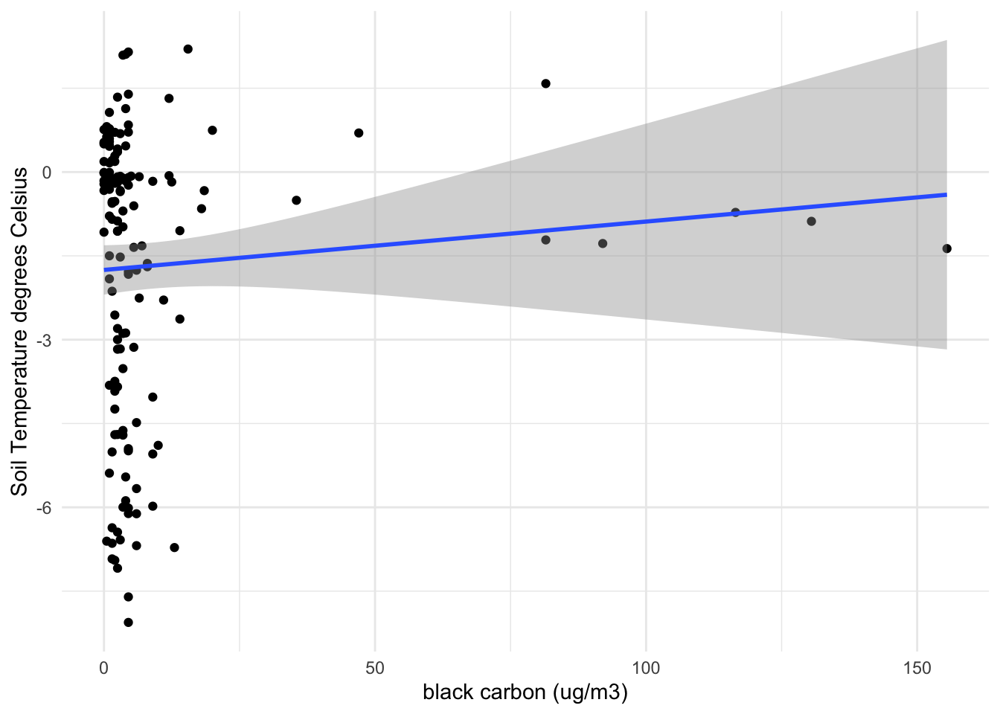
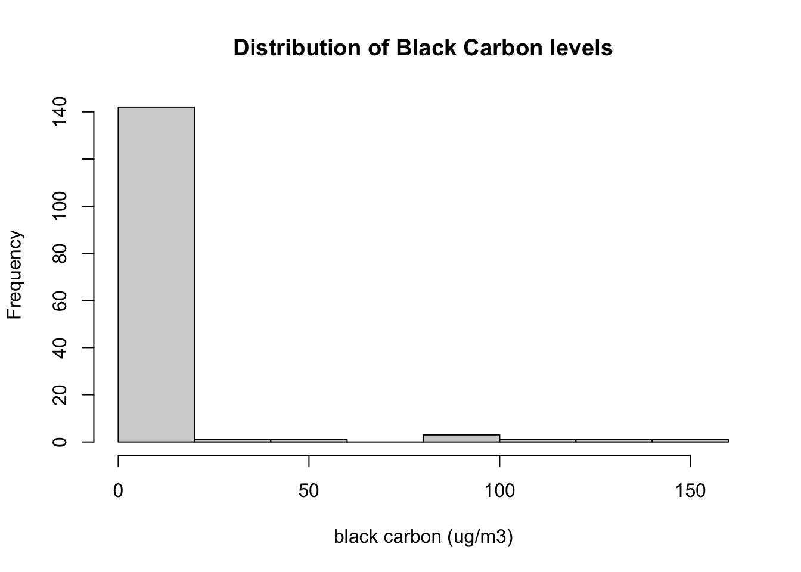
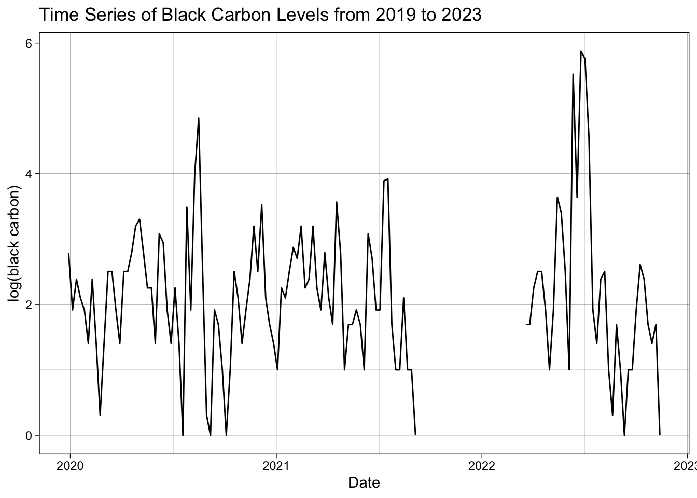

Code
# import necessary libraries
library(here)
library(tidyverse)
library(lubridate)
library(readr)
library(gt)
library(tufte)
library(feasts)
library(tsibble)
library(sjPlot)Soil is all around us. Underneath our homes, creating landscapes and environments we like to recreate in and also a vital carbon sink. Soil, and especially permafrost soils, play a key role in storing greenhouse gases and releasing greenhouse gases as they warm. A permafrost soil is defined as a frozen soil that is at or below zero degrees Celcius, and has been for at least two years (Snow and Ice Data Center, n.d.). Climate change and climate change modeling varies widely on predicting the fate and impacts of permafrost soils (Zhu et al. 2019), but what are some of the main drivers behind permafrost melt?
Ultimately, the main driver behind permafrost melt is temperature. And the obvious thought is of course a warmer temperature will lead to warmer soil temperatures which will ultimately warm permafrost soils to the point where they are no longer frozen. As a broad overview this thought process works, however there are other drivers that determine soil temperature. Soil properties such as soil organic carbon, soil texture, bulk density, and soil moisture all impact how soils respond to temperature. However, it has been shown that soil organic carbon can be the dominant determinant of soil temperature in permafrost soils (Zhu et al. 2019). One way soils build up soil organic carbon is through the deposition of black carbon (Kopecký et al. 2021).
Black carbon is predominantly present as products of incomplete combustion (Environmental Protection Agency 2016) . By incomplete combustion we are talking about soot from wildfires, fossil fuels, and biofuels. As temperature regimes continue to change globally the cadence of black carbon from inputs like wildfires can also be expected to shift.
Therefore a question that comes to mind with these findings are if air temperature and black carbon levels both affect soil temperature, can they predict soil temperature and in the process is air temperature and black carbon interacting with each other?
To explore this question further data from Toolik Field Station, AK will be explored. The Toolik Field Station is a research station operated and managed by the Institute of Arctic Biology at the University of Alaska Fairbanks with cooperative agreement support from the Division of Polar Programs, Directorate for Geosciences at the National Science Foundation (NSF).
# import necessary libraries
library(here)
library(tidyverse)
library(lubridate)
library(readr)
library(gt)
library(tufte)
library(feasts)
library(tsibble)
library(sjPlot)Soil Temperature
Soil Temperature data was accessed from the publicly available Meteorological Data Query from Lake Toolik Field Station (Environmental Data Center Team. 2023). The soil temperature marker utilized for this analysis was the soil temperature for the first 150 centimeters of the soil profile from 2019 to 2022. All measurements were measured in degrees Celsius, and recorded every three hours. For this analysis measurements recorded at the 300 hour mark each week were utilized.
# load data that has soil temperature in degrees Celcius for first 150 cm
soil <- read_csv(here("blog-posts", "2023-12-10-permafrost-black-carbon", "data","3-hour_data.csv"))
# create updated soil temperature df
soil_2 <- soil %>%
# choose all values recorded at hour 300
filter(hour == "300") %>%
# remove hour column
subset(select = -hour) %>%
# rename column for readability
rename(soil_temp = soil1_150cm) Air Temperature
Air Temperature data was accessed from the publicly available Meteorological Data Query from Lake Toolik Field Station (Environmental Data Center Team. 2023). The air temperature used in this analysis was the air temperature max recorded for each period of one week from 2019 to 2022 in degrees Celsius.
# load data that contains air temperature in degrees celcius for Toolik Field Station, Alaska
air_temp <- read_csv(here("blog-posts", "2023-12-10-permafrost-black-carbon", "data", "24-hour_data.csv"))
# create updated air temperature df
air_temp_updated <- air_temp %>%
dplyr::select(air_temp_max_3m, date) %>% # select columns to keep
rename(air_temp = air_temp_max_3m) # rename air_temp for readabilityBlack Carbon
Black Carbon data was accessed from a Purple Air Sensor. The Purple Air Sensor was installed in 2019 in collaboration with the Atmospheric Chemistry and Climate Lab at the University of Alaska Fairbanks run by Dr. Jingqiu Mao. To quantify black carbon Particulate Matter 2.5 ug/m3 was used. These data are recorded weekly.
# load data that contains pm2.5 which will be used as a representation of black carbon
black_carbon <- read_csv(here("blog-posts", "2023-12-10-permafrost-black-carbon", "data", "us-epa-pm25-aqi.csv"))
# black carbon date information is stored as POSIXct so switch to date type
black_carbon$DateTime <- as.Date(black_carbon$DateTime)
# create updated black carbon dataframe
black_carbon_2 <- black_carbon %>%
# rename date column to match other df's
rename(date = DateTime) %>%
# average the two field station measurements
mutate(b_c = (`Toolik Field Station A`+`Toolik Field Station B`)/2) %>%
# b_c is not normally distributed so take log to correct for this
mutate(log_b_c = (log(b_c)+1)) %>%
# remove unecessary columns
subset(select = -c(Average,`Toolik Field Station A`, `Toolik Field Station B`))
# change -Inf values created by log function to 0 to allow regressions to run
black_carbon_2$log_b_c[black_carbon_2$log_b_c == -Inf] <- 0 # create new df containing black carbon and soil temp data
combined_bc_st <- left_join(black_carbon_2, soil_2, by = 'date')
# create new df with black carbon, soil temp, and air temp data
full <- left_join(combined_bc_st, air_temp_updated, by = 'date') %>%
drop_na() # remove na values The following figures show the shape and distribution of these data and help to determine that a linear regression is appropriate.
# plot relationship between air temperature and soil temperature
ggplot(data = full, aes(x = air_temp, y = soil_temp)) +
geom_point() +
theme_minimal() +
geom_smooth(method = lm) +
labs(x = "Air Temperature degrees Celsius", y = "Soil Temperature degrees Celsius")# plot relationship between black carbon and soil temp
ggplot(data = full, aes(x = b_c, y = soil_temp)) +
geom_point() +
theme_minimal() +
geom_smooth(method = lm) +
labs(x = "PM2.5 (ug/m3)", y = "Soil Temperature degrees Celsius")
# clustering of data, use a histogram to examine the distribution
hist(full$b_c, xlab = 'PM2.5 (ug/m3)', main = 'Distribution of Black Carbon levels')
However, something to note is that our black carbon data is not distributed normally which could lead to bias in our results. A log transformation will be applied to correct for this skewed distribution. After the log transformation is applies to black carbon our distribution is more normally distributed.
# re-examine black carbon with a log transformation applied to see if relationship improves
ggplot(data = full, aes(x = log_b_c, y = soil_temp)) +
geom_point() +
theme_minimal() +
geom_smooth(method = lm) +
labs(x = "PM2.5 (ug/m3)", y = "Soil Temperature degrees Celsius")# examine distribution of log transformed black carbon levels
hist(full$log_b_c, xlab = 'log(PM2.5) (ug/m3)', main = 'Distribution of Black Carbon levels')A multi-linear regression model will allow us to answer our question. To explore if black carbon and air temperature affect soil temperature and if black carbon and air temperature have an effect on each other, I used the following interaction model equation:
\[ soiltemp_i=\beta_{0}+\beta_{1} \cdot airtemp_i + \beta_{2} \cdot log(black carbon)_i + \beta_{3} \cdot airtemp_i \cdot log(blackcarbon)_i + \varepsilon_i \]
which resulted in the following inferences:
# run linear regression on soil temp using air temp and black carbon as well as an interaction between black carbon and air temperature
permafrost_mod_3 <- lm(soil_temp ~ air_temp + log_b_c + air_temp:log_b_c, data = full)
permafrost_mod_3_summ <- summary(permafrost_mod_3)
# create a table with results displayed from interaction model
permafrost_table <- permafrost_mod_3 %>%
tab_model()
permafrost_table| soil temp | |||
| Predictors | Estimates | CI | p |
| (Intercept) | -0.82 | -1.61 – -0.03 | 0.041 |
| air temp | 0.06 | -0.01 – 0.12 | 0.079 |
| log b c | -0.36 | -0.70 – -0.02 | 0.036 |
| air temp × log b c | 0.01 | -0.02 – 0.04 | 0.430 |
| Observations | 150 | ||
| R2 / R2 adjusted | 0.196 / 0.179 | ||
The interaction model is able to provide this analysis with some guiding results through hypothesis testing. Our interaction model provides us with three hypotheses:
Hypothesis 1
Our first null hypothesis is that there is no effect of air temperature in degrees Celsius on soil temperature in degrees Celsius. The alternative hypothesis being that there is an affect of air temperature in degrees Celsius on soil temperature in degrees Celsius. We find a statistically significant effect whereby increases in air temperature degrees Celsius increase soil temperature in degrees Celsius holding black carbon fixed. We estimate that a 1 degrees Celsius increase in air temperature increases soil temperature by 0.06 (±.03, p=.07) degrees Celsius. Therefore we reject the null hypothesis that air temperature does not have an affect on soil temperature (at a significance level of 0.05).
Hypothesis 2
Our second null hypothesis is that there is no effect of black carbon in ug/m3 on soil temperature in degrees Celsius. The alternative hypothesis being that there is an effect of black carbon in ug/m3 on soil temperature in degrees Celsius. We find a statistically significant effect whereby increases in air temperature degrees Celsius increase soil temperature in degrees Celsius holding air temperature in degrees Celsius fixed. We estimate that a 1 percent increase in black carbon in ug/m3 will decrease soil temperature by 0.0036 (±.17, p=.03) degrees Celsius. Therefore we reject the null hypothesis that black carbon does not have an affect on soil temperature (at a significance level of 0.01).
Hypothesis 3
Our third hypothesis is that the effect of black carbon on soil temperature varies across temperatures, since warmer temperatures could coincide with higher wildfire incidences. However, we do not find a statistically significant effect whereby the impact of air temperature differs for levels of black carbon present on soil temperature.
The adjusted R2 values also increased slightly (from 0.173 to 0.179) when adding the interaction model. This demonstrates that the interaction model just slightly increases model fit.
However, this adjusted R2 value also indicates that only about 17% of the variability in soil temperature is explained by the model. With this information, we can hypothesize that there are other factors that affect soil temperature not included within this model.
An additional consideration to take into account is that we know temperature experiences seasonality, but does black carbon also fluctuate throughout the year? To investigate this component we will be exploring black carbon levels across time.
# turn permafrost df into tsibble for decompostion
permafrost <- as_tsibble(full) %>%
fill_gaps()
# filter dataset to 2019-2021
permafrost_2020 <- permafrost %>%
filter(between(date, as.Date('2019-12-29'), as.Date('2021-01-03')))
# graph the time series
permafrost_2 <- permafrost_2020 %>%
mutate(date = date(date)) %>%
ggplot(., aes(x = date, y = log_b_c)) +
geom_line() +
labs(x = 'Date', y = 'log(black carbon) (ug/m3)', title = 'Time Series of Black Carbon Levels from 2019 to 2021') +
theme_linedraw()
permafrost_2
In viewing this time series of the data from December of 2019 to January of 2021 we are able to get a continuous glimpse of black carbon levels over time. It does appear that there could be an outlier occurring in September of 2020, but overall there is not a large indicator of trend or seasonality. If we examine the full timeline of data present:
permafrost_full <- permafrost %>%
filter(between(date, as.Date('2019-12-29'), as.Date('2023-11-19')))
permafrost_3 <- permafrost_full %>%
mutate(date = date(date)) %>%
ggplot(., aes(x = date, y = log_b_c)) +
geom_line() +
labs(x = 'Date', y = 'log(black carbon) (ug/m3)', title = 'Time Series of Black Carbon Levels from 2019 to 2023') +
theme_linedraw()
permafrost_3
We can see that there does not appear to be a relationship of seasonality or trend present. Unfortunately, the air sensor did not collect data from mid-September of 2021 to March of 2022. This hole in the data is not marked in the data’s documentation. This gap prevents a decomposition from being run on the entire timescale of data we have that would help determine if seasonality were an important component. However, we can examine a decomposition run from 2019 to 2020 to help determine if there is a trend present in the black carbon levels. Due to the appearance of a few outliers in our data notably September of 2020 a Seasonal and Trend Decomposition using Loess was chosen for its robustness to outliers.
permafrost_decomp <- permafrost_2020 %>%
model(STL(log_b_c, type = "additive")) %>%
components() %>%
autoplot() +
labs(title = "STL decomposition of black carbon levels at Toolik Field Station, AK")
permafrost_decompFrom our decomposition model we can see that for black carbon levels there is no definitive trend and that the remainder component is more important than the trend for black carbon levels.
With this initial analysis we can conclude that air temperature and black carbon do have an effect on soil temperature. However, we can also see that their are factors that we have not addressed in this model to account for more of the variation in soil temperature.
Additional research and analysis should be done surrounding this topic. This analysis is spatially limited to Toolik Field Station in Alaska and its immediate surrounding area. This analysis could be extended to a larger geographic area of permafrost coverage. Additionally, this analysis would benefit from additional and extended data. Toolik Field Station has data on air temperature and soil temperature since 1988. However, the purple sensor which is able to record the black carbon levels, was installed in 2019. Thus, as black carbon is the main interest for my question I think it would benefit from additional time. This could also allow for a next step to be a decomposition model that is able to address seasonality.
To see the full repository, check out the project on Github
@online{widas2023,
author = {Widas, Melissa},
title = {Soil {Temperature} {Analysis} at {Toolik} {Field} {Station,}
{AK}},
date = {2023-12-01},
url = {http://mwidas.github.io/2023-12-10-permafrost-black-carbon},
langid = {en}
}